library(ftsAnalysis)
#> Registered S3 method overwritten by 'quantmod':
#> method from
#> as.zoo.data.frame zooUsing this flows data to compile different types of indicators
- Donor Focused Indicators prefixed
- Donor to Recipient Indicators
- Donors to Destination Indicators
- Recipient Focused indicators
- Destination Focused indicators
Donor
indicator_donor_funding_consistency
donors <- indicator_donor_funding_consistency(flows)
table(donors$Funding_Consistency_Index)
#>
#> 1
#> 247
# library(ggplot2)
# ggplot(donors, aes(x = Funding_Consistency_Index)) +
# geom_histogram(fill = "steelblue", color = "white") +
# unhcrthemes::theme_unhcr(grid = "Y", axis = "X", axis_title = FALSE) +
# labs(
# title = "Distribution of Donor Funding Consistency Index",
# x = "",
# y = "Number of Donors",
# caption = paste(
# "Indicator interpretation:",
# "Measures the proportion of years a donor provided funding relative to total
# years analyzed. Scores range 0-1 where 1 = consistent annual funding.",
# "\n\n",
#
# "How to read the visualization:",
# "X-axis shows consistency index values (0-1), Y-axis shows count of donors.
# Bars represent frequency of donors at each consistency level.", "\n\n",
#
# "Humanitarian relevance:",
# "Identifies reliable long-term partners vs sporadic funders, helping
# prioritize relationship building with consistent donors.", "\n\n",
#
# "Source: Financial Tracking Service (FTS) API."
# )
# )indicator_donor_relationship_duration
donors <- indicator_donor_relationship_duration(flows)
#table(donor$Relationship_Duration_Index)
library(ggplot2)
ggplot(donors, aes(x = Relationship_Duration_Index)) +
geom_histogram(binwidth = 0.05, fill = "steelblue", color = "white") +
unhcrthemes::theme_unhcr(grid = "Y", axis = "X", axis_title = FALSE) +
labs(
title = "Distribution of Donor Relationship Duration Index",
x = "",
y = "Number of Donors",
caption = paste(
"Indicator interpretation:",
"Measures duration of donor's funding relationship relative to maximum
possible duration. 1 = active since earliest data, 0 = new entrant.", "\n\n",
"How to read the visualization:",
"Histogram shows distribution of duration scores. Left-skewed distribution
indicates many new donors, right-skewed indicates established
relationships.", "\n\n",
"Humanitarian relevance:",
"Long-term donors often have deeper contextual understanding and more
predictable funding patterns for strategic planning.", "\n\n",
"Source: Financial Tracking Service (FTS) API."
)
)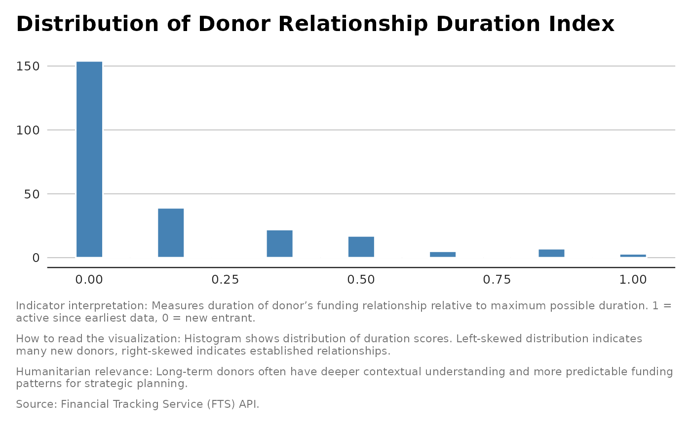
indicator_donor_funding_growth
donors <- indicator_donor_funding_growth(flows)
#table(donors$Funding_Growth_Trend)
library(ggplot2)
ggplot(donors, aes(x = Funding_Growth_Trend)) +
geom_histogram( fill = "steelblue", color = "white") +
unhcrthemes::theme_unhcr(grid = "Y", axis = "X", axis_title = FALSE) +
labs(
title = "Distribution of Donor Funding Growth Trend",
x = "",
y = "Number of Donors",
caption = paste(
"Indicator interpretation:",
"Linear regression slope of annual funding amounts over time. Positive
values = increasing funding, negative = decreasing funding.", "\n\n",
"How to read the visualization:",
"X-axis shows growth rate (USD per year), Y-axis shows donor count. Center
around zero indicates stable funding, right tail indicates growing donors.",
"\n\n",
"Humanitarian relevance:",
"Identifies expanding vs contracting funding sources, helping target
advocacy and partnership efforts with growing donors.", "\n\n",
"Source: Financial Tracking Service (FTS) API."
)
)
#> `stat_bin()` using `bins = 30`. Pick better value `binwidth`.
#> Warning: Removed 154 rows containing non-finite outside the scale range
#> (`stat_bin()`).
indicator_donor_timing_consistency
donors <- indicator_donor_timing_consistency(flows)
#table(donors$Timing_Consistency)
library(ggplot2)
ggplot(donors, aes(x = Timing_Consistency)) +
geom_histogram(binwidth = 0.05, fill = "steelblue", color = "white") +
unhcrthemes::theme_unhcr(grid = "Y", axis = "X", axis_title = FALSE) +
labs(
title = "Distribution of Donor Timing Consistency",
x = "",
y = "Number of Donors",
caption = paste(
"Indicator interpretation:",
"Measures regularity of funding distribution across month
(1 = evenly spread, 0 = highly seasonal/erratic). Based on monthly
funding share dispersion.", "\n\n",
"How to read the visualization:",
"Histogram shows consistency scores. Higher values indicate predictable
monthly funding patterns, lower values indicate lumpy or seasonal
disbursements.", "\n\n",
"Humanitarian relevance:",
"Predictable timing enables better cash flow management and program
continuity, reducing operational disruptions in emergency responses.",
"\n\n",
"Source: Financial Tracking Service (FTS) API."
)
)
#> Warning: Removed 106 rows containing non-finite outside the scale range
#> (`stat_bin()`).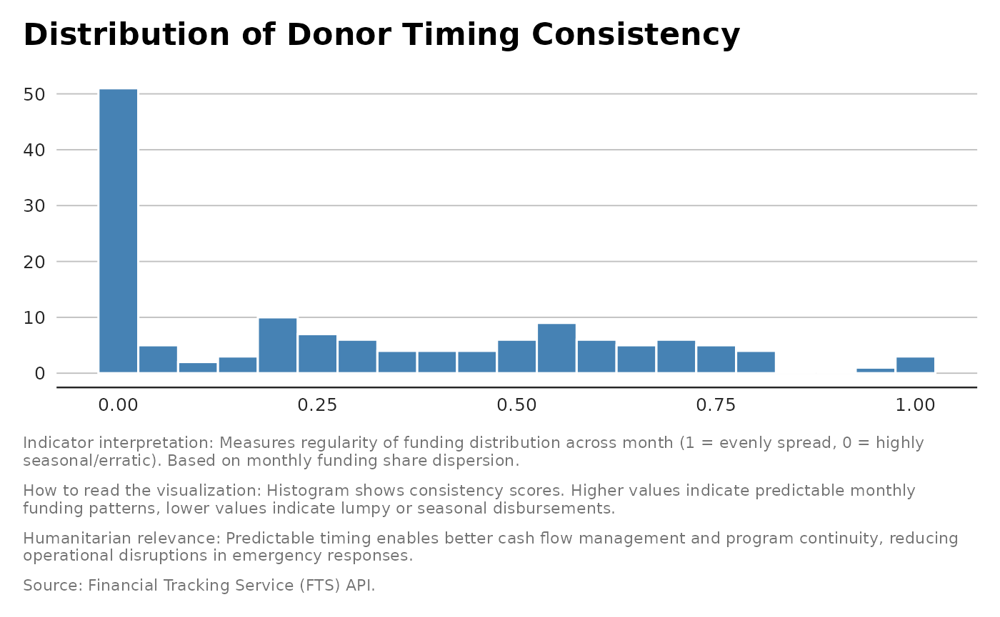
indicator_donor_systemic_concentration
donors <- indicator_donor_systemic_concentration(flows)
#table(donors$Donor_Concentration_Index)
library(ggplot2)
ggplot(donors, aes(x = Donor_Concentration_Index)) +
geom_histogram(binwidth = 0.05, fill = "steelblue", color = "white") +
unhcrthemes::theme_unhcr(grid = "Y", axis = "X", axis_title = FALSE) +
labs(
title = "Distribution of Donor Concentration Index",
x = "",
y = "Number of Donors",
caption = paste(
"Indicator interpretation:",
"Herfindahl-Hirschman Index measuring portfolio concentration across
recipients (0 = highly diversified, 1 = focused on few recipients).",
"\n\n",
"How to read the visualization:",
"X-axis shows concentration level. Left side indicates donors spreading
funds widely, right side indicates focused funding on few partners.", "\n\n",
"Humanitarian relevance:",
"Helps identify donors with broad partner networks vs specialized
relationships, informing partnership and resource mobilization strategies.",
"\n\n",
"Source: Financial Tracking Service (FTS) API."
)
)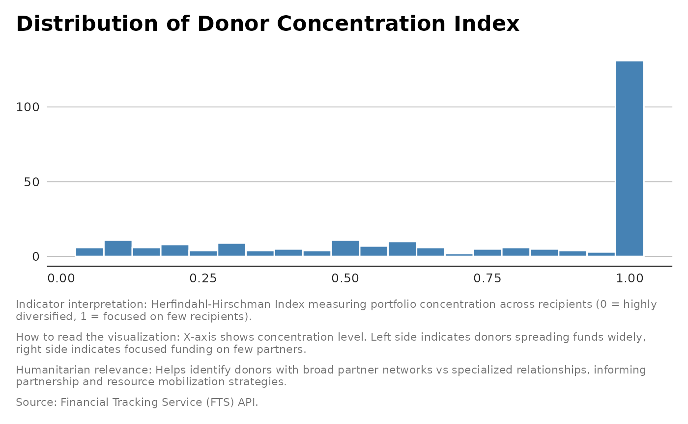
indicator_donor_knowledge_sharing_intensity
donors <- indicator_donor_knowledge_sharing_intensity(flows)
#table(donors$Knowledge_Sharing_Intensity)
library(ggplot2)
# Basic histogram of Knowledge Sharing Intensity
ggplot(donors, aes(x = Knowledge_Sharing_Intensity)) +
geom_histogram(binwidth = 0.05, fill = "steelblue", color = "white") +
unhcrthemes::theme_unhcr(grid = "Y", axis = "X", axis_title = FALSE) +
labs(
title = "Distribution of Donor Knowledge Sharing Intensity",
x = "",
y = "Number of Donors",
caption = paste(
"Indicator interpretation:",
"Proportion of flows mentioning collaboration, learning, or assessment
activities in descriptions (0 = no mention, 1 = all flows include
knowledge components).", "\n\n",
"How to read the visualization:",
"Histogram shows distribution of knowledge sharing emphasis. Higher values
indicate donors prioritizing learning and coordination in funding.", "\n\n",
"Humanitarian relevance:",
"Identifies donors supporting system-wide learning and coordination,
crucial for improving response effectiveness and accountability.", "\n\n",
"Source: Financial Tracking Service (FTS) API."
)
)
indicator_donor_sector_alignment
flows |>
tidyr::unnest(destinationObjects, names_repair = "unique", names_sep = "_") |>
dplyr::filter(destinationObjects_type == "GlobalCluster") |>
dplyr::pull(destinationObjects_name) |>
unlist() |>
unique()
#> [1] "Nutrition"
#> [2] "Health"
#> [3] "Other"
#> [4] "Emergency Shelter and NFI"
#> [5] "Water Sanitation Hygiene"
#> [6] "Food Security"
#> [7] "Logistics"
#> [8] "Coordination and support services"
#> [9] "Protection - Gender-Based Violence"
#> [10] "Multi-sector"
#> [11] "Protection"
#> [12] "Education"
#> [13] "Early Recovery"
#> [14] "Protection - Child Protection"
#> [15] "Protection - Mine Action"
#> [16] "Agriculture"
#> [17] "Protection - Housing, Land and Property"
#> [18] "Camp Coordination / Management"
#> [19] "Protection - Human Trafficking & Smuggling"
#> [20] "Multipurpose Cash"
#> [21] "Emergency Telecommunications"
# pragmatic default weights - illustrative defaults emphasizing life-saving sectors
# (Nutrition, Health, WASH, Food Security) and cash/multi-sector where relevant.
library(tibble)
sectors <- c(
"Nutrition",
"Health",
"Emergency Shelter and NFI",
"Water Sanitation Hygiene",
"Food Security",
"Logistics",
"Protection - Gender-Based Violence",
"Protection - Child Protection",
"Protection",
"Multipurpose Cash",
"Education",
"Multi-sector",
"Protection - Housing, Land and Property",
"Protection - Human Trafficking & Smuggling",
"Coordination and support services",
"Camp Coordination / Management",
"Emergency Telecommunications",
"Agriculture",
"Early Recovery",
"Protection - Mine Action",
"Other"
)
# Adjusted scores based on funding collapse and operational risk
adjusted_scores <- c(
10, # Nutrition: Life-saving and first-line response; malnutrition spikes in
#crises. Funding collapse means ration cuts, so priority remains highest.
9, # Health: Essential for survival; clinics reverting to 1990s models
#(minimal staff, basic meds). High priority to prevent mortality.
8, # Emergency Shelter and NFI: Critical for displaced populations;
#exposure risk rises with underfunding. Still high but slightly below health/nutrition.
8, # Water Sanitation Hygiene (WASH): Prevents disease outbreaks;
#cholera risk escalates when systems fail. Needs strong prioritization.
7, # Food Security: Linked to nutrition but broader (agriculture, livelihoods).
#Funding gaps mean rationing; still vital but slightly less than direct nutrition.
6, # Logistics: Backbone for all sectors; underfunding reduces supply chain
#resilience. Important but not life-saving on its own.
7, # Protection - Gender-Based Violence: GBV spikes in fragile contexts;
#services often first to be cut. Needs strong prioritization for dignity and safety.
6, # Protection - Child Protection: Critical for safeguarding vulnerable
#children; funding collapse risks exploitation. Medium-high priority.
5, # Protection (general): Important for rights and safety but less
#immediately life-saving than GBV or child protection.
9, # Multipurpose Cash: Severely underfunded (only ~20% coverage);
#key for dignity and flexibility. High priority to maintain household resilience.
8, # Education: Collapsing (21% funded); long-term impact on recovery
#and protection. Elevated priority despite being non-life-saving.
6, # Multi-sector: Coordination across sectors matters, but direct impact
# is less urgent than core life-saving interventions.
4, # Protection - Housing, Land and Property: Important for durable
#solutions, but less urgent during acute collapse.
4, # Protection - Human Trafficking & Smuggling: Serious risk but narrower
#scope; medium-low priority compared to GBV/child protection.
3, # Coordination and support services: Necessary for system functioning,
# but deprioritized when survival sectors collapse.
3, # Camp Coordination / Management: Important for organized response,
#but less critical than food, health, WASH.
3, # Emergency Telecommunications: Enables operations but not directly
#life-saving; deprioritized under severe funding constraints.
5, # Agriculture: Supports food security and recovery; medium priority
#as immediate needs dominate.
8, # Early Recovery: Only 17% funded; crucial for resilience and
#preventing protracted crises. Elevated priority despite systemic collapse.
2, # Protection - Mine Action: Important for safety but less urgent
# than health/nutrition during acute funding collapse.
1 # Other: Catch-all category; lowest priority given resource scarcity.
)
sector_capacity <- tibble::tibble(
sector = sectors,
raw_score = adjusted_scores) |>
dplyr::mutate(
capacity_weight = raw_score / sum(raw_score) # normalize to sum to 1
) |>
dplyr::select(sector, capacity_weight)
knitr::kable(sector_capacity |> dplyr::arrange(desc(capacity_weight)))| sector | capacity_weight |
|---|---|
| Nutrition | 0.0819672 |
| Health | 0.0737705 |
| Multipurpose Cash | 0.0737705 |
| Emergency Shelter and NFI | 0.0655738 |
| Water Sanitation Hygiene | 0.0655738 |
| Education | 0.0655738 |
| Early Recovery | 0.0655738 |
| Food Security | 0.0573770 |
| Protection - Gender-Based Violence | 0.0573770 |
| Logistics | 0.0491803 |
| Protection - Child Protection | 0.0491803 |
| Multi-sector | 0.0491803 |
| Protection | 0.0409836 |
| Agriculture | 0.0409836 |
| Protection - Housing, Land and Property | 0.0327869 |
| Protection - Human Trafficking & Smuggling | 0.0327869 |
| Coordination and support services | 0.0245902 |
| Camp Coordination / Management | 0.0245902 |
| Emergency Telecommunications | 0.0245902 |
| Protection - Mine Action | 0.0163934 |
| Other | 0.0081967 |
donors <- indicator_donor_sector_alignment(flows, sector_capacity)
#table(donor$Sector_Alignment )
library(ggplot2)
ggplot(donors, aes(x =Sector_Alignment )) +
geom_histogram(binwidth = 0.05, fill = "steelblue", color = "white") +
unhcrthemes::theme_unhcr(grid = "Y", axis = "X", axis_title = FALSE) +
labs(
title = "Distribution of Donor Sector Alignment",
x = "",
y = "Number of Destination",
caption = paste(
"Indicator interpretation:",
"Weighted alignment between donor funding distribution and internal sector
capacity priorities (0 = misaligned, 1 = perfectly aligned with
capacity weights).", "\n\n",
"How to read the visualization:",
"Histogram shows alignment scores. Higher values indicate donors funding
sectors matching organizational capacities and strategic priorities.",
"\n\n",
"Humanitarian relevance:",
"Helps identify donors whose funding priorities match operational strengths,
enabling more effective resource allocation and partnership building.",
"\n\n",
"Source: Financial Tracking Service (FTS) API."
)
)
indicator_donor_geographic_alignment
destinations <- flows |>
tidyr::unnest(destinationObjects, names_repair = "unique", names_sep = "_") |>
dplyr::filter(destinationObjects_type == "Location") |>
dplyr::pull(destinationObjects_name) |>
unlist() |>
unique()
#dput(destinations)
# High-visibility, acute crises get funded
high_visibility <- c(
"Ukraine", "Syrian Arab Republic", "Occupied Palestinian Territory",
"Sudan", "South Sudan", "Yemen", "Afghanistan", "Myanmar",
"Ethiopia", "Somalia", "Democratic Republic of the Congo",
"Central African Republic", "Haiti"
)
# Long-standing crises with major donor attention maintain coverage
long_standing <- c(
"Lebanon", "Jordan", "Iraq", "Türkiye", "Bangladesh", "Chad",
"Cameroon", "Niger", "Burkina Faso", "Mali", "Nigeria",
"Colombia", "Venezuela, Bolivarian Republic of"
)
# Regional refugee responses collapse
regional_refugee <- c(
"Region - Southern and Eastern Africa", "Region - Middle East and Northern Africa",
"Region - West and Central Africa", "Region - Latin America and the Caribbean",
"Region - Asia and the Pacific", "Uganda", "Kenya", "Tanzania, United Republic of",
"Djibouti", "Mauritania", "Cameroon", "Moldova, Republic of"
)
# Lower-profile crises get abandoned
lower_profile <- c(
"Burundi", "Rwanda", "Eritrea", "Nepal", "Georgia", "Cuba",
"Dominican Republic", "Madagascar", "Mozambique", "Angola", "Malawi",
"Comoros", "Liberia", "Côte d'Ivoire", "Senegal", "Ghana", "Guinea",
"Guinea-Bissau", "Lesotho", "Eswatini", "Zambia", "Cambodia",
"Lao People's Democratic Republic", "Philippines", "Timor-Leste",
"Sri Lanka", "Togo", "Benin", "Gambia", "Nicaragua", "Honduras",
"El Salvador", "Guatemala", "Costa Rica", "Peru", "Ecuador", "Panama",
"Bolivia, Plurinational State of", "Papua New Guinea", "Solomon Islands",
"Kiribati", "Vanuatu", "Micronesia, Federated States of", "Tonga",
"Fiji", "Cook Islands", "Tuvalu", "Samoa", "Nauru", "Niue", "Palau",
"Maldives", "Armenia", "Uzbekistan", "Kazakhstan", "Turkmenistan",
"Azerbaijan", "Tajikistan", "Kyrgyzstan", "Mongolia", "Mauritius",
"Cape Verde", "Equatorial Guinea", "Gabon", "Botswana", "Namibia",
"Seychelles", "Trinidad and Tobago", "Grenada", "Saint Lucia",
"Saint Vincent and the Grenadines", "Barbados", "Guyana", "Suriname",
"Belize", "Anguilla (United Kingdom)", "Aruba (Netherlands)",
"Curaçao (Netherlands)"
)
donor <- indicator_donor_geographic_alignment(flows,
priority_destinations = high_visibility)
#table(donor$Geographic_Alignment)
library(ggplot2)
ggplot(donor, aes(x = Geographic_Alignment)) +
geom_histogram( fill = "steelblue", color = "white") +
unhcrthemes::theme_unhcr(grid = "Y", axis = "X", axis_title = FALSE) +
labs(
title = "Distribution of Donor Geographic Alignment to High Visibility Location",
x = "",
y = "Number of Destination",
caption = paste(
"Indicator interpretation:",
"Jaccard similarity between donor-funded locations and priority
locations (0 = no overlap, 1 = identical geographic focus).", "\n\n",
"How to read the visualization:",
"Histogram shows alignment with specified priority locations. Higher
values indicate donors active in organizational priority countries.",
"\n\n",
"Humanitarian relevance:",
"Identifies natural partners for priority crises and reveals funding gaps
in key locations needing advocacy attention.", "\n\n",
"Source: Financial Tracking Service (FTS) API."
)
)
#> `stat_bin()` using `bins = 30`. Pick better value `binwidth`.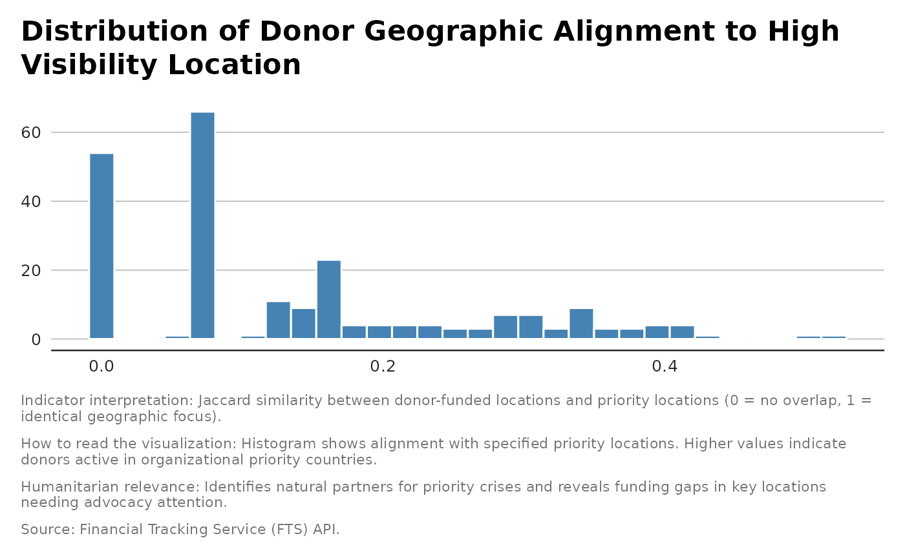
indicator_cross_donor_systemic_destination_alignment
# Compute alignment
alignment <- indicator_cross_donor_systemic_destination_alignment(flows)
# Viz
library(ggplot2)
library(dplyr)
#>
#> Attaching package: 'dplyr'
#> The following objects are masked from 'package:stats':
#>
#> filter, lag
#> The following objects are masked from 'package:base':
#>
#> intersect, setdiff, setequal, union
# Compute total funding per donor
top_donors <- flows |>
tidyr::unnest(sourceObjects, names_sep = "_") |>
dplyr::filter(sourceObjects_type == "Organization") |>
dplyr::rename(donor = sourceObjects_name) |>
dplyr::group_by(donor) |>
dplyr::summarise(total_funding = sum(amountUSD, na.rm = TRUE),
.groups = "drop") |>
dplyr::arrange(desc(total_funding)) |>
dplyr::slice_head(n = 15) |>
dplyr::pull(donor)
# Filter alignment to top donors
alignment_top <- alignment |>
dplyr::filter(donor1 %in% top_donors, donor2 %in% top_donors) |>
dplyr::mutate(
donor1 = stringr::str_wrap(donor1, width = 40),
donor2 = stringr::str_wrap(donor2, width = 40)
)
# Prepare data for ggplot
plot_df <- alignment_top |>
dplyr::mutate(
donor1 = factor(donor1),
donor2 = factor(donor2)
)
# Heatmap
ggplot(plot_df, aes(x = donor2, y = donor1, fill = Destination_Alignment)) +
geom_tile(color = "white") +
scale_fill_viridis_c(option = "plasma", na.value = "grey80", limits = c(0, 1)) +
unhcrthemes::theme_unhcr(grid = FALSE, axis = FALSE, axis_title = FALSE, legend=TRUE) +
theme(axis.text.x = element_text(angle = 45, hjust = 1)) +
labs(
title = "Top 15 Donors to Destination Alignment",
x = "Donor 2",
y = "Donor 1",
fill = "Jaccard\nSimilarity",
caption = paste(
"Indicator interpretation:",
"Jaccard similarity measuring overlap in funded locations/clusters
between donor pairs (0 = no overlap, 1 = identical destination portfolios).",
"\n\n",
"How to read the visualization:",
"Heatmap shows pairwise alignment. Dark colors indicate high
geographic/thematic overlap, light colors indicate complementary coverage.",
"\n\n",
"Humanitarian relevance:",
"Identifies donor clusters with similar focus areas, helping coordinate
advocacy and avoid duplication in under-funded crises.", "\n\n",
"Source: Financial Tracking Service (FTS) API."
)
)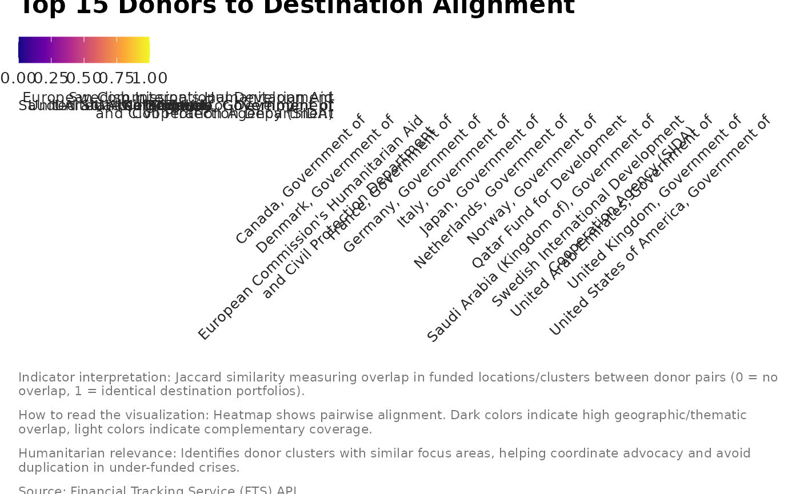
Donor to Recipient
indicator_donor_recipient_relationship_duration
donor_recipient <- indicator_donor_recipient_relationship_duration(flows)
#table(donor_recipient$Relationship_Duration_Index)
library(ggplot2)
ggplot(donor_recipient, aes(x = Relationship_Duration_Index)) +
geom_histogram( fill = "green", color = "white") +
unhcrthemes::theme_unhcr(grid = "Y", axis = "X", axis_title = FALSE) +
labs(
title = "Distribution of Donor Recipient Relationship Duration Index",
x = "",
y = "Number of Donor-Recipient Pairs",
caption = paste(
"Indicator interpretation:",
"Normalized duration of active funding relationships between donor-recipient
pairs (0=new relationship, 1=active since earliest data).", "\n\n",
"How to read the visualization:",
"Histogram shows relationship longevity across partnerships. Right-skewed
distribution indicates many new relationships, left-skewed indicates
established partnerships.", "\n\n",
"Humanitarian relevance:",
"Long-term partnerships build trust, contextual understanding, and
operational efficiency, leading to more effective crisis response.", "\n\n",
"Source: Financial Tracking Service (FTS) API."
)
)
#> `stat_bin()` using `bins = 30`. Pick better value `binwidth`.
#> Warning: Removed 1480 rows containing non-finite outside the scale range
#> (`stat_bin()`).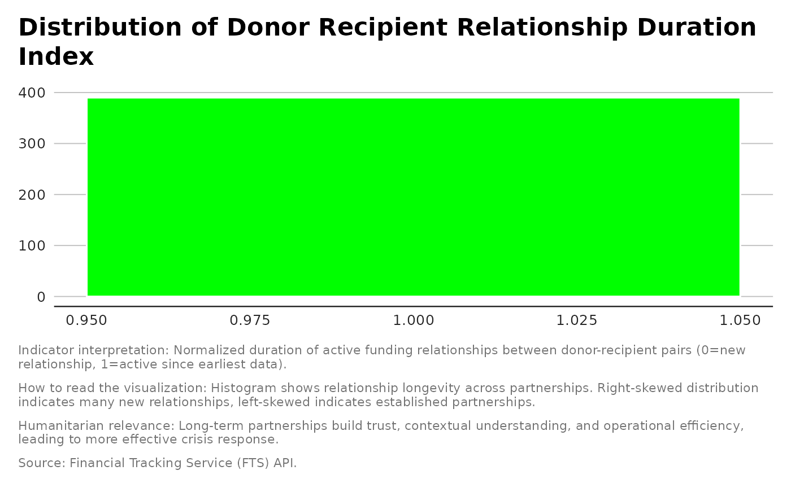
indicator_donor_recipient_funding_growth
donor_recipient <- indicator_donor_recipient_funding_growth(flows)
#table(donor_recipient$Funding_Growth_Trend)
library(ggplot2)
ggplot(donor_recipient, aes(x = Funding_Growth_Trend)) +
geom_histogram( fill = "green", color = "white") +
unhcrthemes::theme_unhcr(grid = "Y", axis = "X", axis_title = FALSE) +
labs(
title = "Distribution of Donor Recipient Funding Growth Trend",
x = "",
y = "Number of Donor-Recipient Pairs",
caption = paste(
"Indicator interpretation:",
"Linear regression slope of annual funding amounts between donor-recipient
pairs. Positive values=increasing funding, negative=decreasing funding.", "\n\n",
"How to read the visualization:",
"Histogram shows growth patterns across partnerships. Center around zero
indicates stable funding, right tail indicates expanding partnerships.", "\n\n",
"Humanitarian relevance:",
"Identifies growing vs contracting funding relationships, helping prioritize
partnership development and identify successful collaboration models.",
"\n\n",
"Source: Financial Tracking Service (FTS) API."
)
)
#> `stat_bin()` using `bins = 30`. Pick better value `binwidth`.
#> Warning: Removed 1480 rows containing non-finite outside the scale range
#> (`stat_bin()`).
indicator_donor_recipient_stability
donor_recipient <- indicator_donor_recipient_stability(flows)
#table(donor_recipient$DonorRecipient_Stability_Index)
library(ggplot2)
ggplot(donor_recipient, aes(x = DonorRecipient_Stability_Index)) +
geom_histogram( fill = "green", color = "white") +
unhcrthemes::theme_unhcr(grid = "Y", axis = "X", axis_title = FALSE) +
labs(
title = "Distribution of Donor Recipient Stability Index",
x = "",
y = "Number of Donor-Recipient Pairs",
caption = paste(
"Indicator interpretation:",
"Proportion of years with active funding between donor-recipient pairs
(0=sporadic funding, 1=consistent annual funding throughout relationship).",
"\n\n",
"How to read the visualization:",
"Histogram shows funding consistency patterns. Higher values indicate
reliable annual partnerships, lower values indicate intermittent engagement.",
"\n\n",
"Humanitarian relevance:",
"Consistent funding enables long-term programming, staff retention, and
institutional strengthening rather than project-based short-term engagements.",
"\n\n",
"Source: Financial Tracking Service (FTS) API."
)
)
#> `stat_bin()` using `bins = 30`. Pick better value `binwidth`.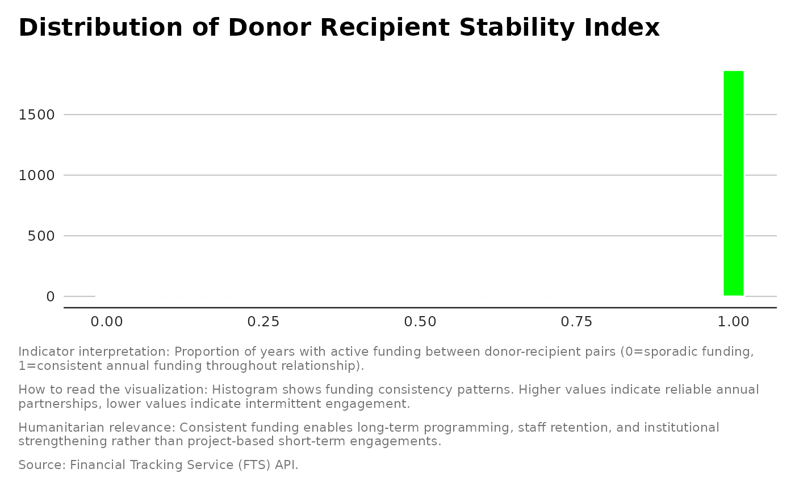
indicator_donor_recipient_concentration
donor_recipient <- indicator_donor_recipient_concentration(flows)
#table(donor_recipient$DonorRecipient_Stability_Index)
library(ggplot2)
ggplot(donor_recipient, aes(x = DonorRecipient_Concentration_Index)) +
geom_histogram( fill = "green", color = "white") +
unhcrthemes::theme_unhcr(grid = "Y", axis = "X", axis_title = FALSE) +
labs(
title = "Distribution of Donor Recipient Concentration Index",
x = "",
y = "Number of Donor-Recipient Pairs",
caption = paste(
"Indicator interpretation:",
"Share of recipient's total funding coming from specific donor (0-1).
Higher values indicate recipient dependency on that donor.", "\n\n",
"How to read the visualization:",
"Histogram shows dependency levels across partnerships. Values near 1
indicate critical donor dependencies requiring diversification strategies.",
"\n\n",
"Humanitarian relevance:",
"Identifies vulnerable partnerships where recipient organizations risk
severe disruption if key donors change funding priorities.", "\n\n",
"Source: Financial Tracking Service (FTS) API."
)
)
#> `stat_bin()` using `bins = 30`. Pick better value `binwidth`.
#> Warning: Removed 1 row containing non-finite outside the scale range
#> (`stat_bin()`).
indicator_donor_recipient_trend
donor_recipient <- indicator_donor_recipient_trend(flows)
#table(donor_recipient$DonorRecipient_Trend_Index)
library(ggplot2)
ggplot(donor_recipient, aes(x = DonorRecipient_Trend_Index)) +
geom_histogram( fill = "green", color = "white") +
unhcrthemes::theme_unhcr(grid = "Y", axis = "X", axis_title = FALSE) +
labs(
title = "Distribution of Donor Recipient Trend Index",
x = "",
y = "Number of Donor-Recipient Pairs",
caption = paste(
"Indicator interpretation:",
"Linear trend of funding amounts between donor-recipient pairs over time.
Positive=increasing investment, negative=phasing out partnership.", "\n\n",
"How to read the visualization:",
"Histogram shows partnership evolution patterns. Right of zero indicates
growing collaborations, left indicates declining engagements.", "\n\n",
"Humanitarian relevance:",
"Reveals evolving partnership strategies - scaling successful collaborations
vs exiting less effective ones - informing relationship management.", "\n\n",
"Source: Financial Tracking Service (FTS) API."
)
)
#> `stat_bin()` using `bins = 30`. Pick better value `binwidth`.
#> Warning: Removed 1480 rows containing non-finite outside the scale range
#> (`stat_bin()`).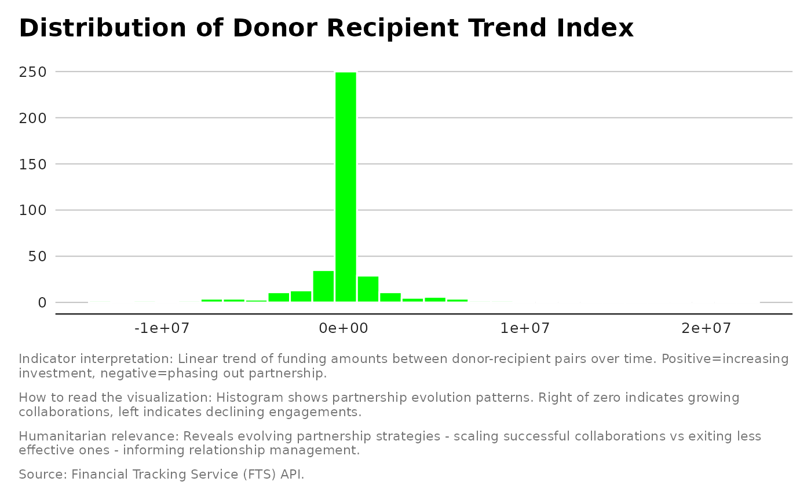
indicator_donor_recipient_reciprocity
donor_recipient <- indicator_donor_recipient_reciprocity(flows)
#table(donor_recipient$DonorRecipient_Reciprocity_Ratio)
library(ggplot2)
ggplot(donor_recipient, aes(x = DonorRecipient_Reciprocity_Ratio)) +
geom_histogram( fill = "green", color = "white") +
unhcrthemes::theme_unhcr(grid = "Y", axis = "X", axis_title = FALSE) +
labs(
title = "Distribution of Donor Recipient Reciprocity Ratio",
x = "",
y = "Number of Donor-Recipient Pairs",
caption = paste(
"Indicator interpretation:",
"Binary indicator of mutual funding relationships where both organizations
act as donor and recipient to each other (0=one-way, 1=reciprocal).", "\n\n",
"How to read the visualization:",
"Two bars showing proportion of one-way vs reciprocal partnerships.
Higher reciprocal values indicate collaborative funding ecosystems.",
"\n\n",
"Humanitarian relevance:",
"Reciprocal funding indicates consortia, pooled funds, or collaborative
programming arrangements that enhance coordination and local ownership.",
"\n\n",
"Source: Financial Tracking Service (FTS) API."
)
)
#> `stat_bin()` using `bins = 30`. Pick better value `binwidth`.
Donor to Destination
indicator_donor_destination_coverage
donor <- indicator_donor_destination_coverage(flows)
#table(donor$DonorDestination_Concentration_Index)
library(ggplot2)
ggplot(donor, aes(x = DonorDestination_Coverage_Index)) +
geom_histogram( fill = "steelblue", color = "white") +
unhcrthemes::theme_unhcr(grid = "Y", axis = "X", axis_title = FALSE) +
labs(
title = "Distribution of Donor Destination Coverage Index",
x = "",
y = "Number of Donors",
caption = paste(
"Indicator interpretation:",
"Proportion of total destinations supported by donor (0 = few locations,
1 = active in all locations in dataset).", "\n\n",
"How to read the visualization:",
"Histogram shows coverage breadth. Higher values indicate donors with global
reach, lower values indicate regionally focused donors.", "\n\n",
"Humanitarian relevance:",
"Identifies global players vs regional specialists, informing crisis-specific
partnership strategies and gap analysis.", "\n\n",
"Source: Financial Tracking Service (FTS) API."
)
)
#> `stat_bin()` using `bins = 30`. Pick better value `binwidth`.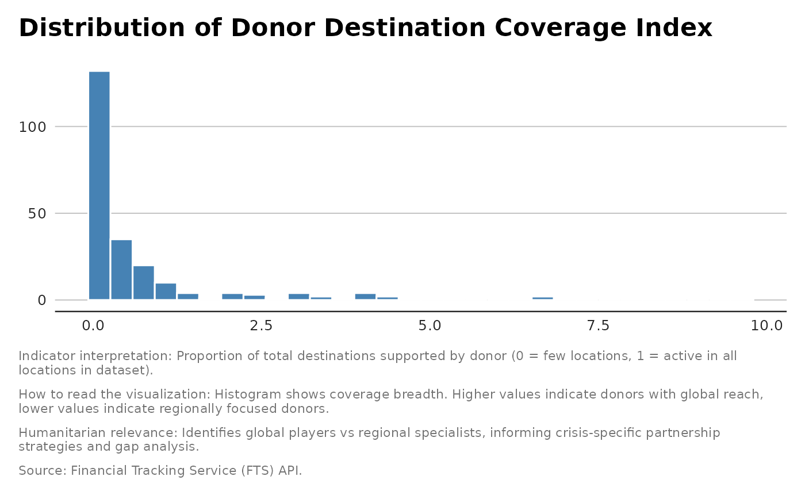
indicator_donor_destination_trend
donor <- indicator_donor_destination_trend(flows)
#table(donor$DonorDestination_Focus_Trend)
library(ggplot2)
ggplot(donor, aes(x = DonorDestination_Focus_Trend)) +
geom_histogram( fill = "steelblue", color = "white") +
unhcrthemes::theme_unhcr(grid = "Y", axis = "X", axis_title = FALSE) +
labs(
title = "Distribution of Donor Destination Focus Trend",
x = "",
y = "Number of Donors",
caption = paste(
"Indicator interpretation:",
"Linear trend of geographic concentration over time (negative = diversifying,
positive = focusing, zero = stable portfolio strategy).", "\n\n",
"How to read the visualization:",
"Histogram shows trend direction. Left of zero indicates donors broadening
geographic scope, right indicates narrowing focus.", "\n\n",
"Humanitarian relevance:",
"Reveals evolving donor strategies - expansion into new crises vs
consolidation in core locations - for anticipating partnership
opportunities.", "\n\n",
"Source: Financial Tracking Service (FTS) API."
)
)
#> `stat_bin()` using `bins = 30`. Pick better value `binwidth`.
#> Warning: Removed 146 rows containing non-finite outside the scale range
#> (`stat_bin()`).
indicator_donor_destination_concentration
donor <- indicator_donor_destination_concentration(flows)
#table(donor$DonorDestination_Concentration_Index)
library(ggplot2)
ggplot(donor, aes(x = DonorDestination_Concentration_Index)) +
geom_histogram( fill = "steelblue", color = "white") +
unhcrthemes::theme_unhcr(grid = "Y", axis = "X", axis_title = FALSE) +
labs(
title = "Distribution of Donor Destination Concentration Index",
x = "",
y = "Number of Donors",
caption = paste(
"Indicator interpretation:",
"Herfindahl-Hirschman Index measuring geographic portfolio concentration
(0 = highly diversified, 1 = focused on few locations/plans).", "\n\n",
"How to read the visualization:",
"Histogram shows concentration levels. Left indicates global spread, right
indicates focused geographic operations in few crises.", "\n\n",
"Humanitarian relevance:",
"Helps understand donor geographic strategies - specialized crisis
responders vs broad global supporters - for targeted engagement.", "\n\n",
"Source: Financial Tracking Service (FTS) API."
)
)
#> `stat_bin()` using `bins = 30`. Pick better value `binwidth`.
indicator_donor_destination_earmarking_flexibility
donor_destination <- indicator_donor_destination_earmarking_flexibility(flows)
#table(donor_destination$Earmarking_Flexibility)
donor_destination <- indicator_donor_destination_earmarking_flexibility(flows)
# ---- Select top donors & top destinations by total USD ----
top_donors <- donor_destination |>
dplyr::group_by(donor) |>
dplyr::summarise(total = sum(total_amount, na.rm = TRUE)) |>
dplyr::arrange(desc(total)) |>
dplyr::slice_head(n = 15)
top_destinations <- donor_destination |>
dplyr::group_by(destination) |>
dplyr::summarise(total = sum(total_amount, na.rm = TRUE)) |>
dplyr::arrange(desc(total)) |>
dplyr::slice_head(n = 15)
donor_destination_top15 <- donor_destination |>
dplyr::filter(
donor %in% top_donors$donor,
destination %in% top_destinations$destination
)
# (Optional) reorder factors for readability
donor_destination_top15 <- donor_destination_top15 |>
dplyr::mutate(
donor = factor(donor, levels = sort(unique(donor))),
destination = factor(destination, levels = sort(unique(destination)))
)
# ---- ggplot2 heatmap ----
ggplot2::ggplot(
donor_destination_top15,
ggplot2::aes(
x = destination,
y = donor,
fill = Earmarking_Flexibility
)
) +
ggplot2::geom_tile(color = "white") +
# Color-blind friendly scale
viridis::scale_fill_viridis(
name = "Flexibility",
option = "viridis", # color-blind friendly
direction = 1,
limits = c(0.25, 1.0),
na.value = "grey80"
) +
ggplot2::labs(
title = "Donor–Destination Earmarking Flexibility
(Top 15 Donors & Destinations)",
subtitle = "Weighted average flexibility score
(1.0 = unearmarked → 0.25 = tightly earmarked)",
x = "Destination Country",
y = "Donor",
caption = paste(
"Indicator interpretation:",
"Weighted average earmarking flexibility for donor-destination pairs
(1=unearmarked, 0.75=softly earmarked, 0.5=earmarked, 0.25=tightly earmarked).",
"\n\n",
"How to read the visualization:",
"Heatmap shows flexibility patterns. Darker colors indicate more flexible
funding arrangements between specific donor-destination combinations.",
"\n\n",
"Humanitarian relevance:",
"Identifies which donors provide flexible funding to specific crises,
enabling context-responsive programming and local decision-making.", "\n\n",
"Source: Financial Tracking Service (FTS) API."
)
) +
unhcrthemes::theme_unhcr(grid = "Y", axis = "X", axis_title = FALSE) +
ggplot2::theme(
axis.text.x = ggplot2::element_text(angle = 45, hjust = 1),
legend.position = "right",
panel.grid = ggplot2::element_blank()
)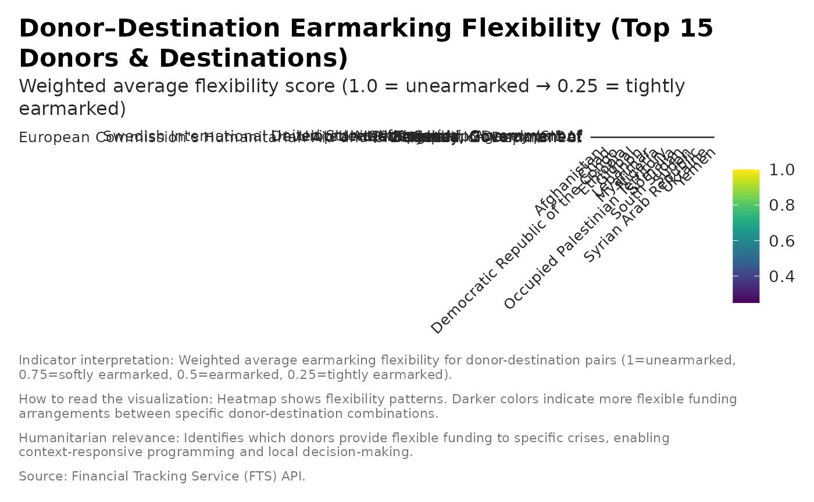
indicator_donor_destination_risk_tolerance
donor_risk <- indicator_donor_destination_risk_tolerance(
flows,
high_risk_locations = c("Sudan", "South Sudan", "Somalia", "Afghanistan"),
new_partners = c("Local NGO A", "Community Org B")
)
# Identify top 15 donors by total contributions
top15 <- donor_risk |>
dplyr::arrange(desc(total)) |>
dplyr::slice_head(n = 15)
donor_risk_top15 <- donor_risk |>
dplyr::filter(donor %in% top15$donor) |>
dplyr::mutate(
donor = factor(donor, levels = top15$donor)
)
# ---- ggplot2 visualisation (viridis) ----
ggplot2::ggplot(
donor_risk_top15,
ggplot2::aes(
x = donor,
y = Risk_Tolerance,
fill = Risk_Tolerance
)
) +
ggplot2::geom_col() +
viridis::scale_fill_viridis(
name = "Risk Tolerance",
option = "viridis",
direction = 1,
limits = c(0, 1),
na.value = "grey80"
) +
ggplot2::coord_flip() +
ggplot2::labs(
title = "Donor Risk Tolerance (Top 15 Donors)",
subtitle = "Share of funding directed to high-risk locations or new partners",
x = "Donor",
y = "Risk Tolerance (0–1)",
caption = paste(
"Indicator interpretation:",
"Share of donor funding going to high-risk locations or new/untested partners.
Higher values indicate greater risk tolerance in funding decisions.", "\n\n",
"How to read the visualization:",
"Bar chart shows risk tolerance levels across top donors. Higher bars
indicate donors more willing to fund in complex environments or with new
partners.", "\n\n",
"Humanitarian relevance:",
"Identifies donors supporting frontline response in most challenging
contexts and investing in local capacity building through new partnerships.",
"\n\n",
"Source: Financial Tracking Service (FTS) API."
)
) +
unhcrthemes::theme_unhcr(grid = "Y", axis = "X", axis_title = FALSE) +
ggplot2::theme(
panel.grid.minor = ggplot2::element_blank(),
legend.position = "right"
)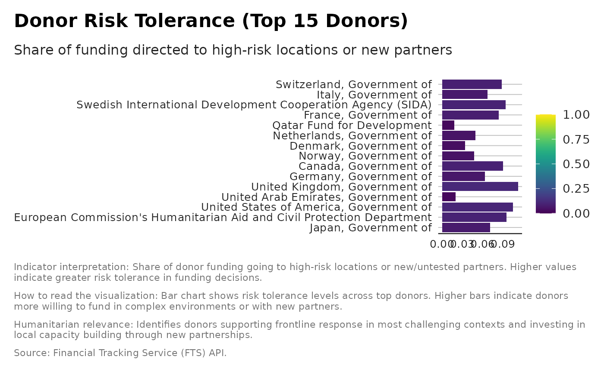
indicator_donor_destination_stability
# Compute indicator
donor_destination<- indicator_donor_destination_stability(flows)
# Identify top 15 destinations by number of active donors or total flows
top_destinations <- donor_destination |>
dplyr::group_by(destination) |>
dplyr::summarise(total_stability = sum(DonorDestination_Stability_Index,
na.rm = TRUE)) |>
dplyr::arrange(desc(total_stability)) |>
dplyr::slice_head(n = 15)
stability_top <- donor_destination |>
dplyr::filter(destination %in% top_destinations$destination) |>
dplyr::mutate(
destination = factor(destination, levels = top_destinations$destination),
donor = factor(donor)
)
# ---- ggplot2 visualisation ----
ggplot2::ggplot(
stability_top,
ggplot2::aes(
x = destination,
y = donor,
fill = DonorDestination_Stability_Index
)
) +
ggplot2::geom_tile(color = "white") +
viridis::scale_fill_viridis(
name = "Stability (0–1)",
option = "viridis",
limits = c(0, 1),
na.value = "grey80"
) +
ggplot2::labs(
title = "Donor → Destination Geographic Stability Index",
subtitle = "Share of years each donor funded a destination
(0 = occasional; 1 = consistent every year)",
x = "Destination",
y = "Donor",
caption = paste(
"Indicator interpretation:",
"Proportion of years with active funding between donor-destination pairs
(0=sporadic engagement, 1=consistent annual funding throughout period).",
"\n\n",
"How to read the visualization:",
"Heatmap shows funding consistency patterns. Darker colors indicate stable
long-term donor engagement in specific crisis contexts.", "\n\n",
"Humanitarian relevance:",
"Identifies donors providing predictable funding to specific crises,
enabling long-term programming and sustainable response capacity building.",
"\n\n",
"Source: Financial Tracking Service (FTS) API."
)
) +
unhcrthemes::theme_unhcr(grid = "Y", axis = "X", axis_title = FALSE) +
ggplot2::theme(
axis.text.x = ggplot2::element_text(angle = 45, hjust = 1),
panel.grid = ggplot2::element_blank(),
legend.position = "right"
)
Recipient
indicator_recipient_funding_share
recipients <- indicator_recipient_funding_share(flows)
#table(recipients$Funding_Volume_Share)
library(ggplot2)
# Basic histogram of Knowledge Sharing Intensity
ggplot(recipients, aes(x = Funding_Volume_Share)) +
geom_histogram( fill = "lightgreen", color = "white") +
unhcrthemes::theme_unhcr(grid = "Y", axis = "X", axis_title = FALSE) +
labs(
title = "Distribution of Recipients Funding Volume Share",
x = "",
y = "Number of Recipients",
caption = paste(
"Indicator interpretation:",
"Measures the proportion of total humanitarian funding received by each
recipient organization. Higher values indicate larger market share.",
"\n\n",
"How to read the visualization:",
"X-axis shows funding share (0-1), Y-axis shows recipient count. Most
recipients will have small shares, few will dominate (right tail).", "\n\n",
"Humanitarian relevance:",
"Identifies major implementing partners and market concentration, helping
understand dependency risks and partnership opportunities.", "\n\n",
"Source: Financial Tracking Service (FTS) API."
)
)
#> `stat_bin()` using `bins = 30`. Pick better value `binwidth`.
indicator_recipient_amount_stability
recipients <- indicator_recipient_amount_stability(flows)
#table(recipients$Amount_Stability)
library(ggplot2)
ggplot(recipients, aes(x = Amount_Stability)) +
geom_histogram( fill = "lightgreen", color = "white") +
unhcrthemes::theme_unhcr(grid = "Y", axis = "X", axis_title = FALSE) +
labs(
title = "Distribution of Recipients Amount Stability",
x = "",
y = "Number of Recipients",
caption = paste(
"Indicator interpretation:",
"Measures year-to-year funding stability as 1 minus coefficient of variation.
1 = perfectly stable annual funding, lower values = volatile funding
patterns.", "\n\n",
"How to read the visualization:",
"Histogram shows stability scores. Higher values indicate predictable funding
streams, negative values indicate high volatility (SD > mean).", "\n\n",
"Humanitarian relevance:",
"Stable funding enables long-term programming and institutional strengthening,
while volatility disrupts operations and staff retention.", "\n\n",
"Source: Financial Tracking Service (FTS) API."
)
)
#> `stat_bin()` using `bins = 30`. Pick better value `binwidth`.
#> Warning: Removed 455 rows containing non-finite outside the scale range
#> (`stat_bin()`).
indicator_recipient_cofunding_rate
recipients <- indicator_recipient_cofunding_rate(flows)
#table(recipients$Co_Funding_Rate)
library(ggplot2)
ggplot(recipients, aes(x = Co_Funding_Rate)) +
geom_histogram( fill = "lightgreen", color = "white") +
unhcrthemes::theme_unhcr(grid = "Y", axis = "X", axis_title = FALSE) +
labs(
title = "Distribution of Recipients CoFunding Rate",
x = "",
y = "Number of Recipients",
caption = paste(
"Indicator interpretation:",
"Percentage of funding flows where recipient shares funding with other
organizations (not sole recipient). 0 = always sole recipient,
1 = always co-funded.", "\n\n",
"How to read the visualization:",
"Histogram shows co-funding frequency. Higher values indicate collaborative
funding arrangements, lower values indicate standalone projects.", "\n\n",
"Humanitarian relevance:",
"Identifies organizations experienced in consortium work and coordination,
crucial for complex multi-partner responses and integrated programming.",
"\n\n",
"Source: Financial Tracking Service (FTS) API."
)
)
#> `stat_bin()` using `bins = 30`. Pick better value `binwidth`.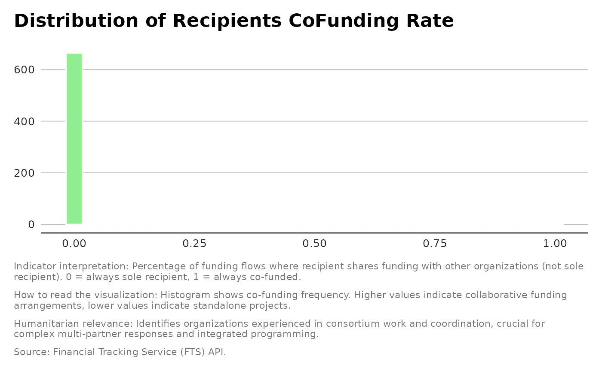
indicator_recipient_systemic_diversification
recipients <- indicator_recipient_systemic_diversification(flows)
#table(recipients$Recipient_Diversification_Index)
library(ggplot2)
ggplot(recipients, aes(x = Recipient_Diversification_Index)) +
geom_histogram( fill = "lightgreen", color = "white") +
unhcrthemes::theme_unhcr(grid = "Y", axis = "X", axis_title = FALSE) +
labs(
title = "Distribution of Recipient Diversification Index",
x = "",
y = "Number of Recipients",
caption = paste(
"Indicator interpretation:",
"Entropy-based measure of funding source diversification across donors.
0 = dependent on single donor,
1 = perfectly diversified across many donors.", "\n\n",
"How to read the visualization:",
"Histogram shows diversification levels. Higher values indicate resilient
funding bases, lower values indicate donor concentration risks.", "\n\n",
"Humanitarian relevance:",
"Diversified funding reduces vulnerability to individual donor policy
changes and enhances organizational sustainability and independence.", "\n\n",
"Source: Financial Tracking Service (FTS) API."
)
)
#> `stat_bin()` using `bins = 30`. Pick better value `binwidth`.
#> Warning: Removed 469 rows containing non-finite outside the scale range
#> (`stat_bin()`).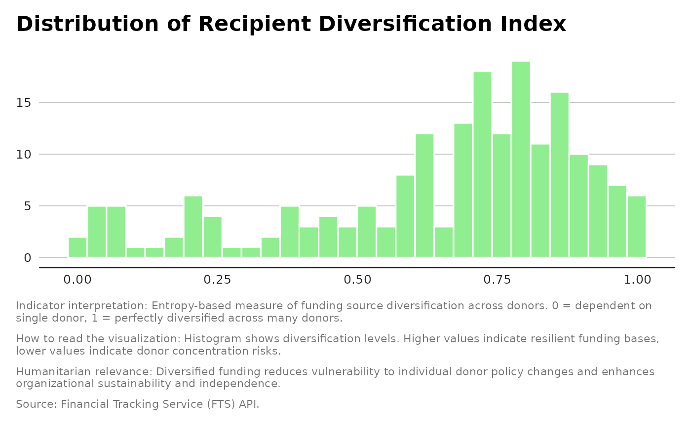
Destination
indicator_destination_modality_innovation
destination <- indicator_destination_modality_innovation(flows)
#table(destination $Recipient_Diversification_Index)
library(ggplot2)
ggplot(destination, aes(x = Modality_Innovation)) +
geom_histogram( fill = "red", color = "white") +
unhcrthemes::theme_unhcr(grid = "Y", axis = "X", axis_title = FALSE) +
labs(
title = "Distribution of Destination Modality Innovation",
x = "",
y = "Number of Destination",
caption = paste(
"Indicator interpretation:",
"Percentage of funding using Cash Transfer Programming (CTP) per destination.
Higher values indicate greater adoption of innovative cash-based approaches.",
"\n\n",
"How to read the visualization:",
"Histogram shows CTP adoption rates across destinations. Right-skewed
distribution indicates most destinations have low CTP usage, few are CTP
leaders.", "\n\n",
"Humanitarian relevance:",
"Cash programming increases efficiency, dignity, and local market benefits.
Identifies destinations where cash coordination capacity may need
strengthening.", "\n\n",
"Source: Financial Tracking Service (FTS) API."
)
)
#> `stat_bin()` using `bins = 30`. Pick better value `binwidth`.
indicator_destination_pipeline_visibility
destination <- indicator_destination_pipeline_visibility(flows)
#table(destination$Recipient_Diversification_Index)
library(ggplot2)
ggplot(destination, aes(x = Pipeline_Visibility)) +
geom_histogram( fill = "red", color = "white") +
unhcrthemes::theme_unhcr(grid = "Y", axis = "X", axis_title = FALSE) +
labs(
title = "Distribution of Destination Pipeline Visibility",
x = "",
y = "Number of Destination",
caption = paste(
"Indicator interpretation:",
"Proportion of funding flows extending beyond current year. Higher values
indicate better forward visibility and multi-year planning capacity.",
"\n\n",
"How to read the visualization:",
"Histogram shows pipeline visibility across destinations. Most destinations
cluster near zero, indicating predominantly annual funding cycles.", "\n\n",
"Humanitarian relevance:",
"Multi-year funding enables strategic programming, staff retention, and
sustainable crisis response rather than short-term emergency patches.",
"\n\n",
"Source: Financial Tracking Service (FTS) API."
)
)
#> `stat_bin()` using `bins = 30`. Pick better value `binwidth`.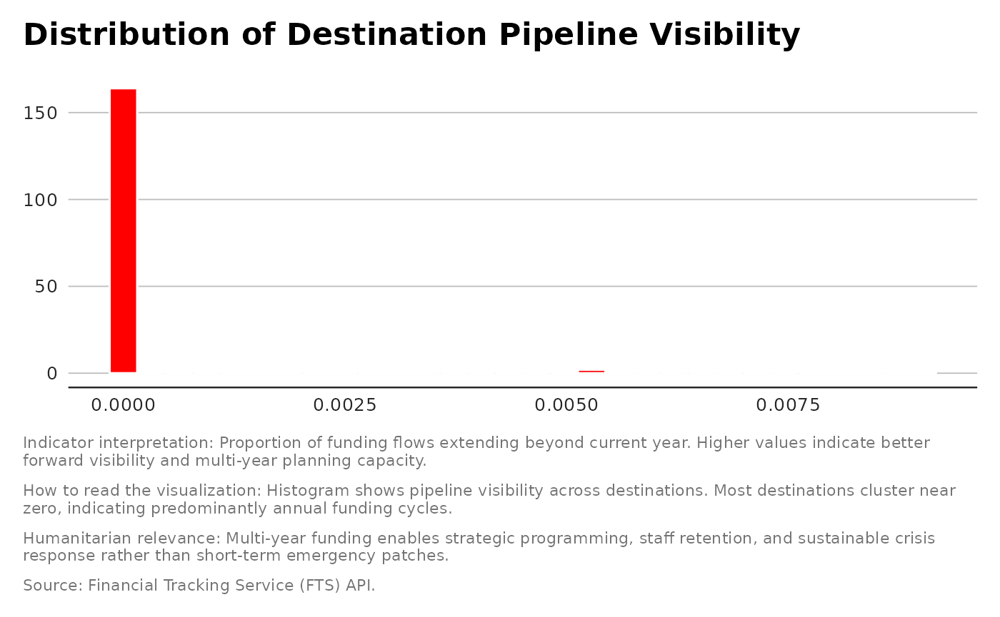
indicator_destination_earmarking_flexibility
destination <- indicator_destination_earmarking_flexibility(flows)
#table(destination$Earmarking_Flexibility)
library(ggplot2)
ggplot(destination, aes(x = Earmarking_Flexibility)) +
geom_histogram( fill = "red", color = "white") +
unhcrthemes::theme_unhcr(grid = "Y", axis = "X", axis_title = FALSE) +
labs(
title = "Distribution of Destination Earmarking Flexibility",
x = "",
y = "Number of Destination",
caption = paste(
"Indicator interpretation:",
"Weighted average of earmarking flexibility (1=unearmarked, 0.75=softly
earmarked, 0.5=earmarked, 0.25=tightly earmarked). Higher values indicate
more flexible funding.", "\n\n",
"How to read the visualization:",
"Histogram shows flexibility scores. Higher values indicate destinations
receiving more unearmarked funding for adaptive programming.", "\n\n",
"Humanitarian relevance:",
"Flexible funding enables context-responsive programming, local leadership,
and efficient resource allocation based on evolving needs rather than
rigid donor requirements.", "\n\n",
"Source: Financial Tracking Service (FTS) API."
)
)
#> `stat_bin()` using `bins = 30`. Pick better value `binwidth`.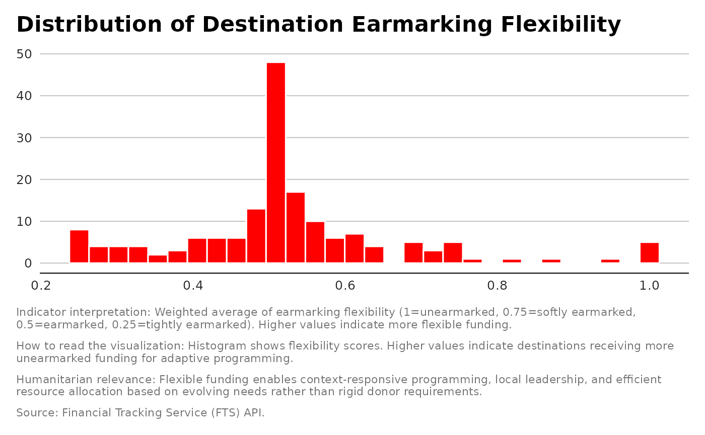
indicator_destination_donor_diversity
destination <- indicator_destination_donor_diversity(flows)
#table(destination$Earmarking_Flexibility)
library(ggplot2)
ggplot(destination, aes(x = Destination_Donor_Diversity_Index)) +
geom_histogram( fill = "red", color = "white") +
unhcrthemes::theme_unhcr(grid = "Y", axis = "X", axis_title = FALSE) +
labs(
title = "Distribution of Destination Donor Diversity Index",
x = "",
y = "Number of Destination",
caption = paste(
"Indicator interpretation:",
"Inverse Herfindahl-Hirschman Index measuring donor diversification
(0=single donor dependency, 1=highly diversified funding base).", "\n\n",
"How to read the visualization:",
"Histogram shows diversification levels. Higher values indicate resilient
funding ecosystems, lower values indicate vulnerability to individual
donor decisions.", "\n\n",
"Humanitarian relevance:",
"Diversified funding reduces crisis vulnerability to donor policy changes
and ensures more stable response capacity during political shifts.", "\n\n",
"Source: Financial Tracking Service (FTS) API."
)
)
#> `stat_bin()` using `bins = 30`. Pick better value `binwidth`.
indicator_destination_funding_stability
destination <- indicator_destination_funding_stability(flows)
#table(destination$Destination_Funding_Stability_Index)
library(ggplot2)
ggplot(destination, aes(x = Destination_Funding_Stability_Index)) +
geom_histogram( fill = "red", color = "white") +
unhcrthemes::theme_unhcr(grid = "Y", axis = "X", axis_title = FALSE) +
labs(
title = "Distribution of Destination Funding Stability Index",
x = "",
y = "Number of Destination",
caption = paste(
"Indicator interpretation:",
"1 minus coefficient of variation of annual funding amounts.
1=perfectly stable, lower values=volatile funding,
negative values=high volatility (SD > mean).", "\n\n",
"How to read the visualization:",
"Histogram shows stability patterns. Higher values enable predictable
programming, negative values indicate boom-bust cycles disrupting operations.",
"\n\n",
"Humanitarian relevance:",
"Funding stability enables long-term planning, staff retention, and
consistent service delivery rather than reactive emergency-only responses.",
"\n\n",
"Source: Financial Tracking Service (FTS) API."
)
)
#> `stat_bin()` using `bins = 30`. Pick better value `binwidth`.
#> Warning: Removed 45 rows containing non-finite outside the scale range
#> (`stat_bin()`).
indicator_destination_funding_trend
destination <- indicator_destination_funding_trend(flows)
#table(destination$Destination_Funding_Growth_Trend)
library(ggplot2)
ggplot(destination, aes(x = Destination_Funding_Growth_Trend)) +
geom_histogram( fill = "red", color = "white") +
unhcrthemes::theme_unhcr(grid = "Y", axis = "X", axis_title = FALSE) +
labs(
title = "Distribution of Destination Funding Growth Trend",
x = "",
y = "Number of Destination",
caption = paste(
"Indicator interpretation:",
"Linear regression slope of annual funding over time.
Positive values=increasing funding, negative values=decreasing funding,
zero=stable funding.", "\n\n",
"How to read the visualization:",
"Histogram shows growth/decline patterns. Right of zero indicates expanding
crisis responses, left indicates potential donor fatigue or improving
contexts.", "\n\n",
"Humanitarian relevance:",
"Identifies crises receiving increasing attention vs. those facing funding
declines despite ongoing needs, informing advocacy priorities.", "\n\n",
"Source: Financial Tracking Service (FTS) API."
)
)
#> `stat_bin()` using `bins = 30`. Pick better value `binwidth`.
#> Warning: Removed 45 rows containing non-finite outside the scale range
#> (`stat_bin()`).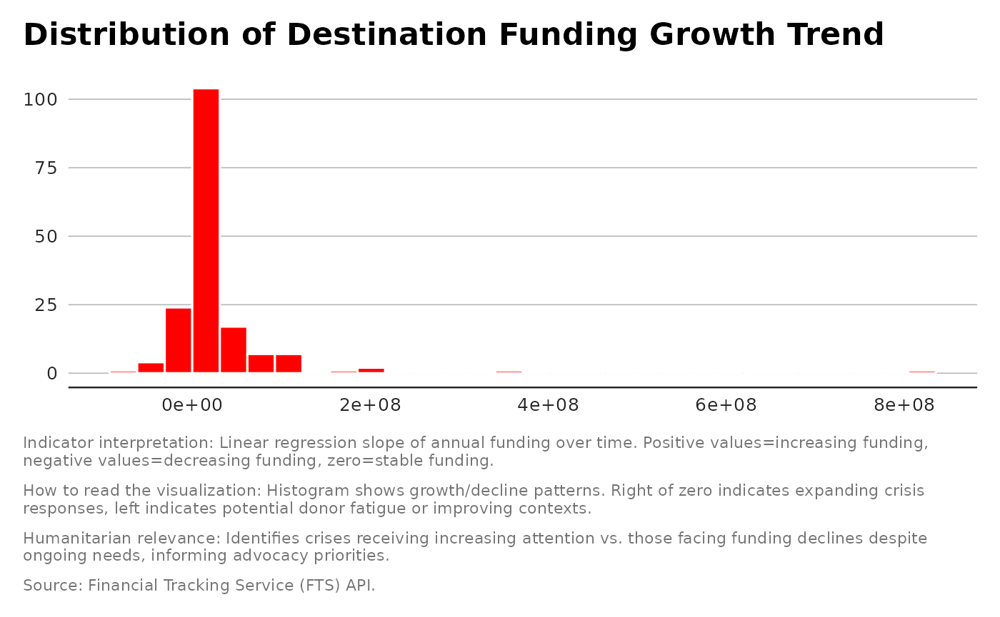
indicator_destination_donor_retention
destination <- indicator_destination_donor_retention(flows)
#table(destination$Destination_Donor_Retention_Index)
library(ggplot2)
ggplot(destination, aes(x = Destination_Donor_Retention_Index)) +
geom_histogram( fill = "red", color = "white") +
unhcrthemes::theme_unhcr(grid = "Y", axis = "X", axis_title = FALSE) +
labs(
title = "Distribution of Destination Donor Retention Index",
x = "",
y = "Number of Destination",
caption = paste(
"Indicator interpretation:",
"Proportion of donors who continue funding a destination year after year.
Higher values indicate loyal donor bases and sustained engagement.", "\n\n",
"How to read the visualization:",
"Histogram shows retention rates. Higher values indicate stable donor
relationships, lower values indicate high donor turnover and relationship
building needs.", "\n\n",
"Humanitarian relevance:",
"Donor retention reduces transaction costs, builds contextual knowledge,
and enables more effective long-term partnerships in complex crises.",
"\n\n",
"Source: Financial Tracking Service (FTS) API."
)
)
#> `stat_bin()` using `bins = 30`. Pick better value `binwidth`.
indicator_destination_funding_diversity
destination <- indicator_destination_funding_diversity(flows)
#table(destination$Destination_Funding_Diversity)
library(ggplot2)
ggplot(destination, aes(x = Destination_Funding_Diversity)) +
geom_histogram( fill = "red", color = "white") +
unhcrthemes::theme_unhcr(grid = "Y", axis = "X", axis_title = FALSE) +
labs(
title = "Distribution of Destination Funding Diversity",
x = "",
y = "Number of Destination",
caption = paste(
"Indicator interpretation:",
"Shannon entropy-based measure of funding distribution across donors
(0=single donor dominance, 1=perfect diversity across many donors).", "\n\n",
"How to read the visualization:",
"Histogram shows diversity levels. Higher values indicate resilient funding
ecosystems, lower values indicate concentration risks and vulnerability.",
"\n\n",
"Humanitarian relevance:",
"Diverse funding bases protect against individual donor withdrawals and
enable more balanced response coordination across multiple priorities.",
"\n\n",
"Source: Financial Tracking Service (FTS) API."
)
)
#> `stat_bin()` using `bins = 30`. Pick better value `binwidth`.
#> Warning: Removed 31 rows containing non-finite outside the scale range
#> (`stat_bin()`).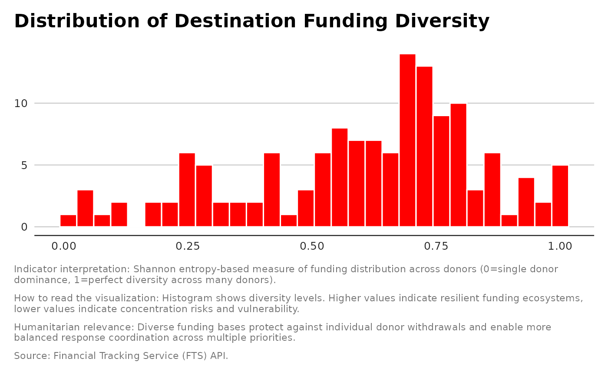
indicator_destination_funding_volatility
destination <-indicator_destination_funding_volatility(flows)
#table(destination$Destination_Funding_Volatility)
library(ggplot2)
ggplot(destination, aes(x = Destination_Funding_Volatility)) +
geom_histogram( fill = "red", color = "white") +
unhcrthemes::theme_unhcr(grid = "Y", axis = "X", axis_title = FALSE) +
labs(
title = "Distribution of Destination Funding Volatility",
x = "",
y = "Number of Destination",
caption = paste(
"Indicator interpretation:",
"1 minus coefficient of variation of annual funding (0=highly volatile,
1=perfectly stable). Inverse measure of year-to-year funding
unpredictability.", "\n\n",
"How to read the visualization:",
"Histogram shows volatility patterns. Higher values enable predictable
programming, lower values indicate disruptive funding fluctuations.", "\n\n",
"Humanitarian relevance:",
"Funding volatility disrupts staffing, procurement, and program continuity,
reducing operational efficiency and response effectiveness.", "\n\n",
"Source: Financial Tracking Service (FTS) API."
)
)
#> `stat_bin()` using `bins = 30`. Pick better value `binwidth`.
#> Warning: Removed 44 rows containing non-finite outside the scale range
#> (`stat_bin()`).
indicator_destination_dependency
destination <-indicator_destination_dependency(flows)
#table(destination$Destination_Dependency_Index)
library(ggplot2)
ggplot(destination, aes(x = Destination_Dependency_Index)) +
geom_histogram( fill = "red", color = "white") +
unhcrthemes::theme_unhcr(grid = "Y", axis = "X", axis_title = FALSE) +
labs(
title = "Distribution of Destination Dependency Index",
x = "",
y = "Number of Destination",
caption = paste(
"Indicator interpretation:",
"Share of total funding from largest single donor (0-1). Higher values
indicate heavy reliance on one donor, creating vulnerability.", "\n\n",
"How to read the visualization:",
"Histogram shows dependency levels. Values near 1 indicate high-risk
single-donor dependencies requiring diversification strategies.", "\n\n",
"Humanitarian relevance:",
"Single-donor dependency creates systemic risk - if that donor changes
priorities, entire crisis responses can be jeopardized.", "\n\n",
"Source: Financial Tracking Service (FTS) API."
)
)
#> `stat_bin()` using `bins = 30`. Pick better value `binwidth`.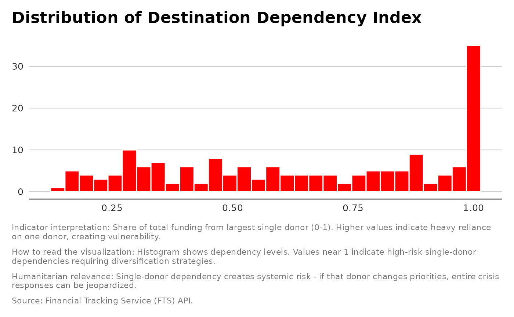
indicator_destination_modality_balance
destination <- indicator_destination_modality_balance(flows)
#table(destination$Destination_Modality_Balance)
library(ggplot2)
ggplot(destination, aes(x = Destination_Modality_Balance)) +
geom_histogram( fill = "red", color = "white") +
unhcrthemes::theme_unhcr(grid = "Y", axis = "X", axis_title = FALSE) +
labs(
title = "Distribution of Destination Modality Balance",
x = "",
y = "Number of Destination",
caption = paste(
"Indicator interpretation:",
"Share of cash-based programming (CTP) relative to all modalities (0-1).
Higher values indicate greater cash modality utilization.", "\n\n",
"How to read the visualization:",
"Histogram shows CTP adoption across destinations. Most destinations cluster
near zero, indicating traditional in-kind programming dominance.", "\n\n",
"Humanitarian relevance:",
"Appropriate modality balance ensures efficient, dignified assistance while
maintaining essential in-kind support where markets are non-functional.",
"\n\n",
"Source: Financial Tracking Service (FTS) API."
)
)
#> `stat_bin()` using `bins = 30`. Pick better value `binwidth`.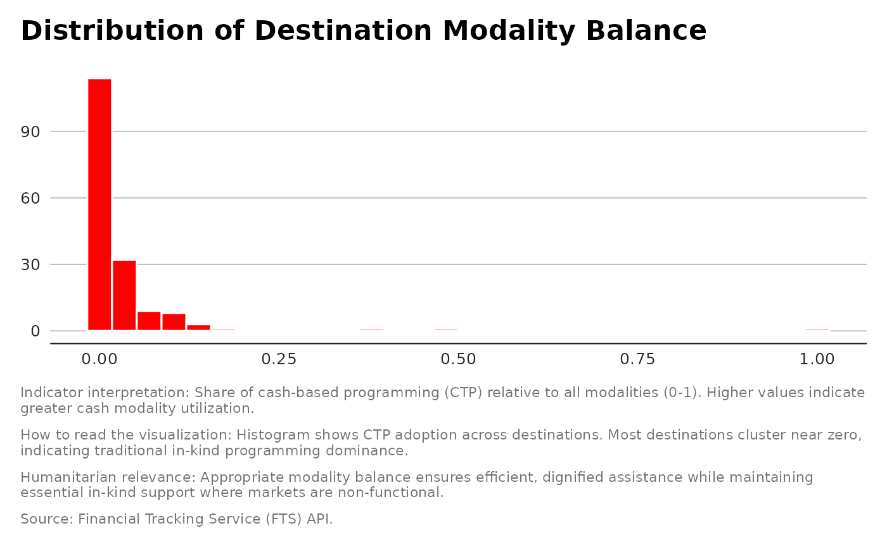